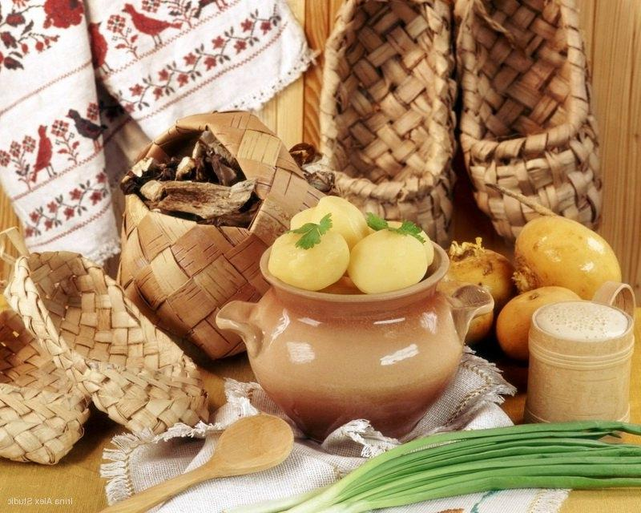
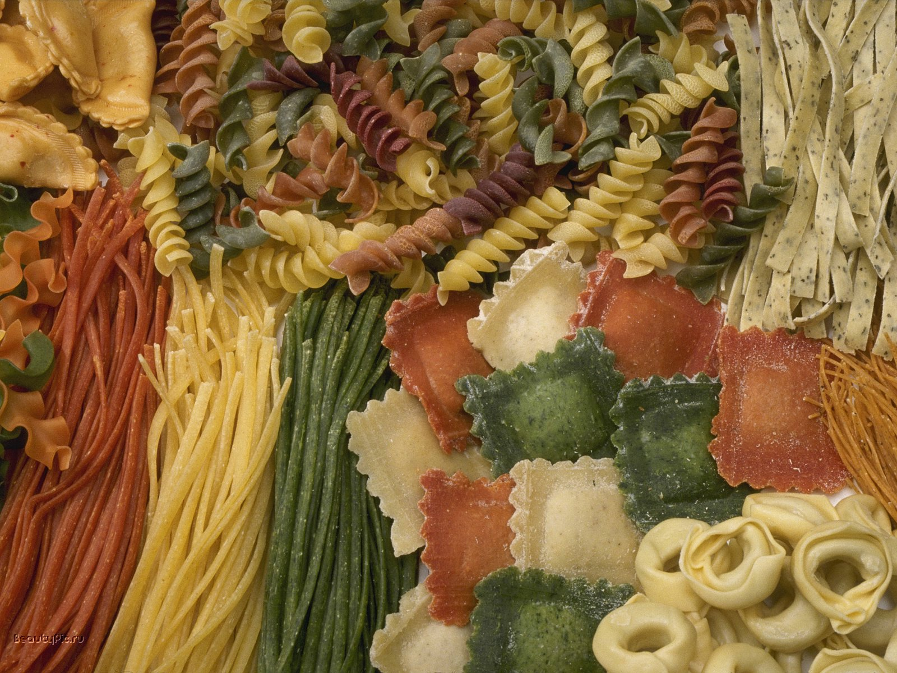

Кухни народов мира
Исторические события, происходящие в разных странах, а также их географическое положение, культура, традиции, национальные особенности и религиозные верования их народов оказали большое влияние на национальные кулинарные рецепты.
Азербайджанская кухня
Национальное блюдо – плов имеет так же несколько разновидностей, но готовится строго по определенной схеме – все компоненты готовят раздельно. Поскольку рис составляет основу плова, то от качества его приготовления зависит вкус всего блюда. Необходимо использовать лишь определенные сорта риса, и во время варки следить, чтобы он не склеился, а лишь слегка и равномерно набух. Поскольку азербайджанский плов состоит из трех частей, то и кушать его надо особенно – мясо заедать рисом, а вслед за тем пряной травой.
СсылкаАрмянская кухня
Армянская кулинария наиболее широко использует говядину и баранину, свинина употребляется редко. Весной из свежих виноградных листьев, а летом и осенью из яблок, айвы, баклажан, перца и помидоров готовят толму (голубцы), начиненные мясным фаршем, рисом и пряной зеленью.
СсылкаБелорусская кухня
Многовековую, богатую и интересную историю имеет белорусская кухня. Издавна белорусы поддерживали тесные хозяйственно-экономические связи с русскими, поляками, украинцами, латышами и литовцами. И вполне закономерно, что белорусская кухня оказала влияние на кухни соседних народов. В свою очередь кухни этих народов в значительной мере воздействовали и на белорусскую. Об этом свидетельствую общие названия блюд и кухонной утвари. Белорусы, как и другие славянские народы, издавна занимались земледелием. Рожь, пшеница, ячмень, овес, гречиха, горох – древнейшие культуры, известны по материалам археологических раскопок на территории Беларуси и по древнерусским летописям. В повседневном питании белорусов использовались зерновые и овощи, выращиваемые на полях и огородах. Печеный ржаной хлеб и другие изделия из ржаной муки на протяжении многих веков занимали главенствующее место в питании населения. Много пословиц и поговорок сложилось в народе о хлебе «Хлеб – усяму галава».
Особенно разнообразны в Беларуси блюда из картофеля, который до сих пор называют вторым хлебом. Картофельная бабка, драники, комы, колдуны, копытка, клецки…
СсылкаГрузинская кухня
В Грузии немало общенациональных кушаний. Повсеместно готовят мясо на вертеле (шашлык). В Грузии его называют мивади. Как Западная, так и Восточная Грузия славится,изготовлением острого соуса с орехами и специями-сациви, которым в холодном виде заливают кур и индеек. Среди наиболее популярных блюд из птицы следует назвать также чихиртму — бульон из курицы или индейки, приправленный мукой, взболтанным в уксусе яйцом и луком, соус чахохбили, который готовится с большим количеством массированного лука.
СсылкаИтальянская кухня
Ризотто — это одно из самых популярных итальянских блюд. Сложно представить себе итальянский ресторан, не предлагающий в меню это рисовое блюдо. У риса очень древнее происхождение, считается, что он родом с востока, возможно, из Бенгала, из Индии. Римляне были знакомы с рисом, но они не ели его, а использовали для изготовления кремов и получения лечебных отваров. Рис был впервые официально упомянут в документе XV века в Милане, в письме Гиангалеццо Висконти, герцога Милана. В XVI веке Милан был полностью окружен рисовыми полями с их типичными каналами, блестящими на солнце. Ризотто, скорее всего с шафраном, было изобретено в Милане, но теперь оно популярно по всей Ломбардии. Его можно готовить с рыбой из озер или рек, с тыквой или пеперони, с луганега (сосисками) или с лягушками, в любом случае получится изысканное блюдо.
СсылкаЦитрусовые
- Апельсин
- Лимон
- Лайм